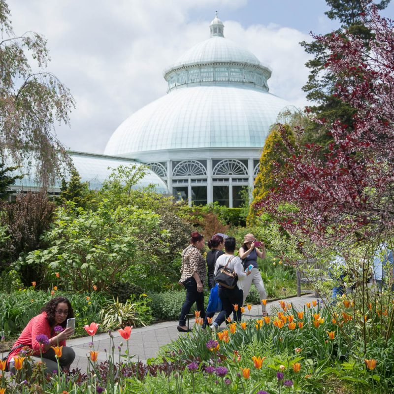
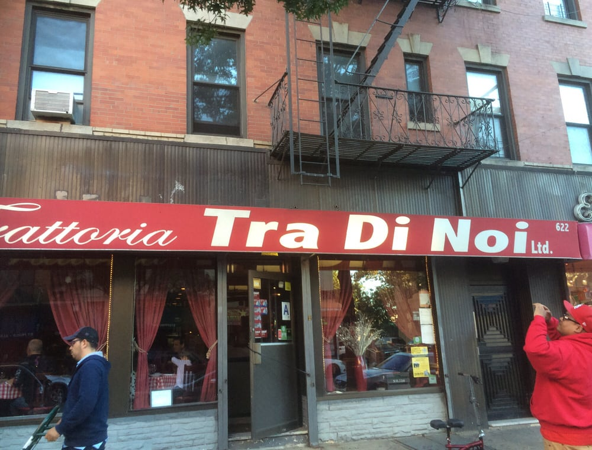

Parks
The New York Botanical Garden
The New York Botanical Garden is a botanical garden and National Historic Landmark located in the Bronx, New York City. The 250-acre site's verdant landscape supports over one million living plants in extensive collections. Plan your visit today! Go to the New York Botanical Garden website to plan your visit.
Museums
The Bronx Museum of the Arts
The Bronx Museum of the Arts specializes in contemporary art by New Yorkers of Latin, Asian & African-American descent. Plan your visit to the Bronx Museum today!
Restaurants
The Tra Di Noi Restaurant
The Tra Di Noi Restaurant is a family-run Italian restaurant cooking classic dishes in a homey, simple setting. Call the Tra Di Noi Restaurant. today to make your reservation.